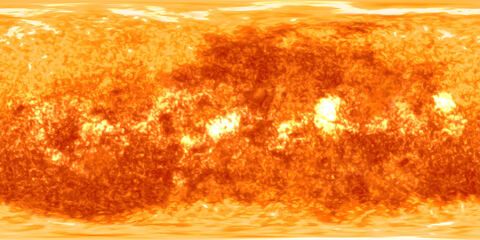
Sun
Solar System Scope. Not turned to the Sun's real rotation.
Every picture, catalogue and orbit in the demos, with its source, its licence and whether it can go public. The engine itself carries none of this. Each story brings its own.
The real stars and the Milky Way, behind every scene, placed by their true directions in space.
 MILKY WAY · KEVINMLOCH, GAIA EDR3
MILKY WAY · KEVINMLOCH, GAIA EDR3
Maps wrapped around each body. Most are 2048×1024.

Solar System Scope. Not turned to the Sun's real rotation.

Solar System Scope, from NASA imagery.
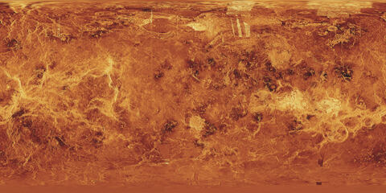
USGS and NASA Magellan radar mosaic, the surface under the clouds.
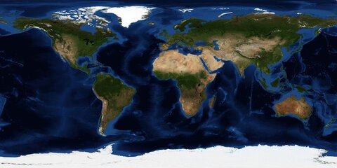
NASA Blue Marble: Next Generation with topography and bathymetry, July 2004, 4096×2048.
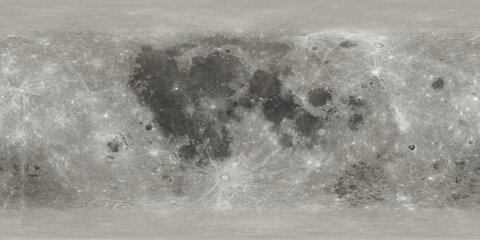
NASA CGI Moon Kit (SVS 4720), LROC colour map with polar fill, 2048×1024.

Solar System Scope, resized from the 8k map.
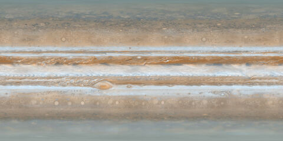
Solar System Scope, 2048×1024.
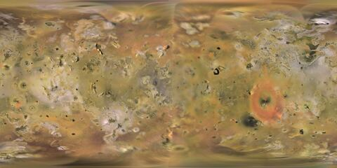
USGS Galileo and Voyager mosaic.
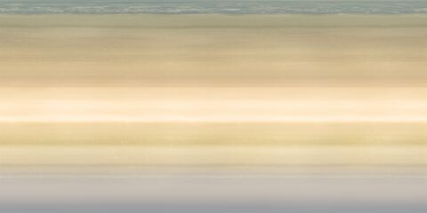
Solar System Scope, 2048×1024.
Solar System Scope, 2048×1024.
Solar System Scope, 2048×1024.
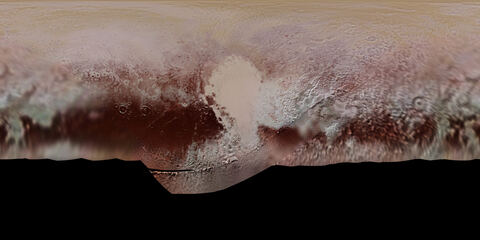
New Horizons global colour map (PIA11707), resized to 4096×2048. The southern third was in darkness at the flyby.
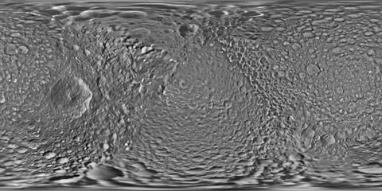
Cassini global map (PIA17214).
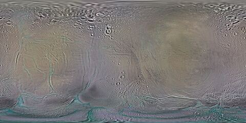
Cassini colour map (PIA18435).
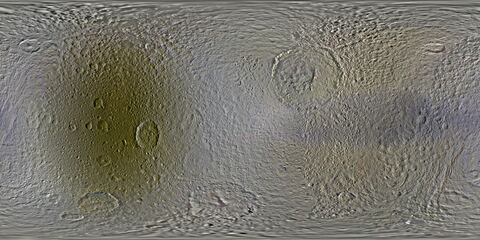
Cassini colour map (PIA18439).
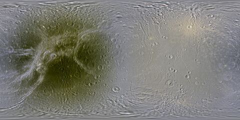
Cassini colour map (PIA18434), resized to 4096×2048.
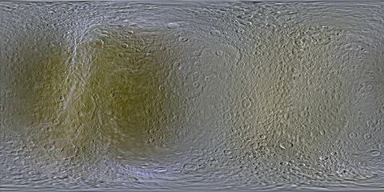
Cassini colour map (PIA18438).
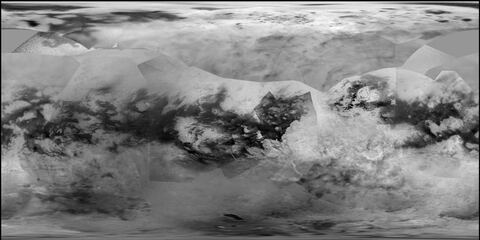
Cassini global albedo map (PIA19658).
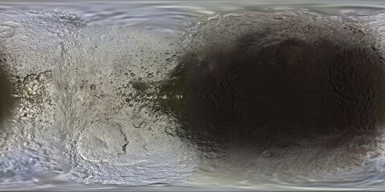
Cassini colour map (PIA18436).
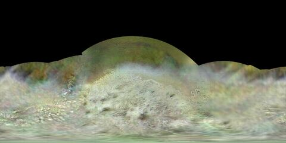
Voyager 2 map (PIA18668), resized to 4096×2048. Voyager saw about half the surface.
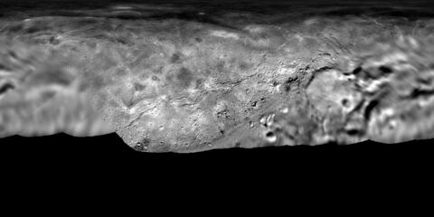
USGS New Horizons mosaic, the 1024-pixel preview.
The credit lines each source asks for, word for word where they give one.
Milky Way render by Kevinmloch (bsrender) from Gaia EDR3, ESA/Gaia/DPAC. commons.wikimedia.org/wiki/File:Milky_Way_360_equirectangular_rendering_with_foreground_stars_removed.png. Changed: resized to 3840x1920, re-encoded as JPEG and dimmed when drawn.
RequiredSolar System Scope (solarsystemscope.com/textures), based on NASA imagery and elevation data.
RequiredVenus texture: USGS Astrogeology / NASA Magellan C3-MDIR mosaic, public domain. astrogeology.usgs.gov/search/map/Venus/Magellan/Venus_Magellan_C3MDIR_Colorized_Global_Mosaic_4641m.
CourtesyUSGS Astrogeology Science Center; NASA/JPL Galileo and Voyager missions.
CourtesyNASA Earth Observatory (Blue Marble: Next Generation, Reto Stöckli). July 2004 with topography and bathymetry, science.nasa.gov/earth/earth-observatory/blue-marble-next-generation. Changed: resampled to 4096×2048.
CourtesyNASA's Scientific Visualization Studio. CGI Moon Kit, svs.gsfc.nasa.gov/4720, LROC WAC colour map with polar fill. Changed: converted to JPEG.
CourtesySolar System Scope (solarsystemscope.com/textures), based on NASA imagery. Uranus and Neptune are the published files unchanged.
RequiredCassini global maps PIA17214, PIA18435, PIA18439, PIA18434, PIA18438, PIA19658, PIA18436. NASA/JPL-Caltech/Space Science Institute (and Lunar and Planetary Institute for the colour maps). Changed: Dione resized to 4096×2048.
CourtesyVoyager 2 map PIA18668, NASA/JPL-Caltech/Lunar & Planetary Institute. Changed: resized to 4096×2048.
CourtesyNew Horizons global colour map PIA11707, NASA/JHUAPL/SwRI, photojournal.jpl.nasa.gov/catalog/PIA11707. Changed: resized to 4096×2048.
CourtesyUSGS Astrogeology, Charon New Horizons LORRI MVIC global mosaic 300 m (2017), the 1024-pixel preview.
CiteDrawn in code as bands, with edges from NASA's planetary ring fact sheets (nssdc.gsfc.nasa.gov/planetary/factsheet) and colours matched by eye to NASA spacecraft photos. Saturn, Uranus and Neptune match the fact sheets. Jupiter's bands sit about a fifth too close to the planet.
Own workGlobal Meteor Network, globalmeteornetwork.org. Vida et al. 2020, MNRAS 491(2); Vida et al. 2021, MNRAS 506(4).
RequiredJenniskens et al. 2020, Planetary and Space Science 182; Jopek & Kaňuchová 2017, Planetary and Space Science 143.
CiteHYG database v4.2 (Hipparcos, Yale Bright Star and Gliese catalogues), astronexus, astronexus.com/projects/hyg. Changed: stars of magnitude 6.5 or brighter kept, right ascension converted from hours to degrees. The licence covers this star file only; the code stays MIT.
RequiredNASA/JPL Horizons and Small-Body Database. orb.js by lizard-isana. VSOP87, Bretagnon & Francou 1988. IAU WGCCRE 2015 report, Archinal et al. 2018.
CiteSome code ideas (camera gestures, atmosphere glow, picture loading, info-panel layout) and the Mercury, Venus, Mars and Io pictures came from planetary-explorer.anipatke.com, with the Saturn, moon, Triton, Pluto and Charon maps, and every tagged place listed below. The story panel's look and behaviour (side panel, phone bottom sheet, marker dot, badge) follow its panel parts, rewritten for Astraeus.
Own workNASA Apollo 11 Mission Report, MSC-00171 / SP-238.
CourtesyAmerican Meteor Society, Meteor Shower Calendar 2026/2027.
CiteThe sources that place each body, the meteor data, and the methods under the pictures, with how each one was checked.
Where things are
Earth's spin and tilt from the IAU 2006 and 2000B models.
Open-source library
PublicCompared with JPL Horizons across 1969 to 2030.
Open-source library
PublicChecked against JPL Horizons (DE441) at six dates, 1969 to 2030. Rotation from the IAU 2015 report.
Published theory
PublicIts path about Jupiter is rebuilt from short fitted pieces of JPL Horizons positions, within centimetres of them over the window the demo covers.
JPL published values
PublicWhole 133-year orbit, out to 51 AU. Within 1% of its distance from the Sun at eight dates.
Within 11,000 km at the 2026 Geminid peak, 2% off near the Sun six years earlier.
Paths rebuilt between NASA's published anchor points, with 30 events timed to a tenth of a second.
Meteor showers
CC BY 4.0. About 30,000 Perseids a year. The source for the Perseids and the Geminids, public with credit. 25,588 Perseid orbits drawn (July and August 2025) and 51,115 Geminid orbits (December 2024 and 2025).
Peak solar longitude, radiant and speed from the IAU (J2000). Activity dates and peak rate from the American Meteor Society.
Published reference values
PublicThe science
Every moment is converted once, in one place, so the Moon, the planets and the spacecraft all agree on what "now" means.
orb.js time scales
TestedPositions are held in one fixed sky frame (J2000) and converted for drawing. "Up" can be celestial north, or flat to the planets' plane.
IAU standards
TestedPlanets from a full published theory. Comets, asteroids and every meteor from classical orbital elements, solved per frame.
Bretagnon & Francou 1988
Checked vs JPLThe scene is re-centred on whatever you look at, so a body 51 AU out still sits still on screen. Measured: under a hundredth of a pixel of drift.
The peak is the moment the Sun reaches the published longitude. Pinned against NASA's Earth positions to within 0.005°.
A published quality cut: a wide enough viewing angle between cameras (15° or more) and a speed error of 10% or less. A switch between all and reliable.
The Perseid orbits pass closest to Earth 2.2 hours before the official peak. The radiant they imply is 0.04° from the IAU's, and the median speed of the members crossing near Earth is 58.75 km/s against the IAU's 58.8.
Where each meteor sits along its orbit today wasn't measured, so the dots are spread evenly and labelled illustrative. The bunch near the comet is a labelled model.
Shown in every info panel and story panel
LabelledSeven panels for Apollo 11 and three each for the Perseids, the Geminids and Jupiter and Io. Each opens when playback reaches its moment, wears one of the three badges, and lists its sources. Twelve panels are marked observed, three modelled and one illustrative.
Every moon JPL Horizons lists for these planets, by family, with its size and discovery year. Sizes marked "est." or "about" are estimates from brightness. Moons with a map are drawn as globes in the planets demo; the others are dots in their family colour.
| Planet | Moons | With a picture |
|---|---|---|
| Jupiter | 115 | 4 |
| Mars | 2 | 0 |
| Saturn | 292 | 7 |
| Uranus | 28 | 0 |
| Neptune | 16 | 1 |
| Pluto | 5 | 1 |
Moons with their own picture and tagged places: Io, Europa, Ganymede and Callisto (Jupiter); Mimas, Enceladus, Tethys, Dione, Rhea, Titan and Iapetus (Saturn); Triton (Neptune); Charon (Pluto).
All 115 moons JPL Horizons lists for Jupiter, by family, as of 18 October 2026. Positions are curve fits of Horizons vectors; the family, size and discovery year of each moon are below with where they came from. Sizes marked "about" are estimates from brightness.
Io, Europa, Ganymede and Callisto: the four large moons, all discovered in 1610. Each has a Planetary Explorer body package. Source: JPL Solar System Dynamics.
Metis, Adrastea, Amalthea and Thebe: small regular moons inside Io's orbit, on nearly circular orbits close to Jupiter. Source: JPL Solar System Dynamics.
Irregular moons on similar prograde orbits about 11 to 12 million km out, taken to be pieces of one parent body. Source: Sheppard & Jewitt 2003; Scott S. Sheppard ; Moons of Jupiter .
Irregular moons on similar retrograde orbits about 20 to 22 million km out, taken to be pieces of one parent body. Source: Sheppard & Jewitt 2003; Scott S. Sheppard ; Moons of Jupiter .
Irregular moons on similar retrograde orbits about 22 to 24 million km out, taken to be pieces of one parent body. Source: Sheppard & Jewitt 2003; Scott S. Sheppard ; Moons of Jupiter .
Irregular moons on retrograde orbits with a wide spread of distances and shapes; Sinope is listed here though it may have been captured separately. Source: Sheppard & Jewitt 2003; Scott S. Sheppard ; Moons of Jupiter .
Two small prograde irregular moons on orbits further out than the Himalia group (Carpo and S/2018 J 4). Source: Scott S. Sheppard ; Moons of Jupiter .
Moons in no published family: Themisto (prograde, the innermost irregular) and Valetudo (prograde, on an orbit that crosses the retrograde moons'). Source: Scott S. Sheppard ; Moons of Jupiter .
Sources: JPL Horizons On-Line Ephemeris System; JPL Solar System Dynamics; JPL Solar System Dynamics; JPL Solar System Dynamics; Scott S. Sheppard; Sheppard & Jewitt 2003; Moons of Jupiter. Group membership as tabulated in the Wikipedia moon table, which cites Sheppard; each moon's own source ids are in data/moons/jupiter.json.
All 2 moons JPL Horizons lists for Mars, by family, as of 2026-10-20. The family, size and discovery year of each moon are below.
The two small moons of Mars, found by Asaph Hall in 1877: irregular lumps close to Mars on nearly circular orbits. Source: JPL Solar System Dynamics; Moons of Mars.
Sources: JPL Horizons On-Line Ephemeris System; JPL Solar System Dynamics; JPL Solar System Dynamics; JPL Solar System Dynamics; Moons of Mars. Each moon's own source ids are in data/moons/mars.json.
All 292 moons JPL Horizons lists for Saturn, by family, as of 2026-10-20. The family, size and discovery year of each moon are below.
Mimas, Enceladus, Tethys, Dione, Rhea, Titan and Iapetus: massive enough to be round. Each has a Planetary Explorer map. Source: JPL Solar System Dynamics; Moons of Saturn.
The small moons on regular orbits: the ring shepherds and ring moonlets close to Saturn (Pan to Pallene), the pair Janus and Epimetheus that swap orbits, the Trojan moons of Tethys and Dione, and Hyperion. Source: JPL Solar System Dynamics; Moons of Saturn; Thomas & Helfenstein 2020.
Irregular moons on prograde orbits, 190 to 300 Saturn radii out, inclined 43 to 51 degrees, taken to be pieces of one or a few parent bodies; the Kiviuq and Siarnaq subgroups. Source: Gladman et al. 2001; Grav & Bauer 2007; Ashton; Moons of Saturn.
Irregular moons on prograde orbits inclined 34 to 41 degrees, taken to be pieces of one parent body; the largest is Albiorix. Source: Gladman et al. 2001; Grav & Bauer 2007; Ashton; Moons of Saturn.
All retrograde irregular moons, the largest group by far; Phoebe is the biggest. Ashton et al. 2025 split it by inclination into the Phoebe, Mundilfari, Kari and low-inclination subgroups. Source: Gladman et al. 2001; Grav & Bauer 2007; Ashton; Moons of Saturn.
Sources: JPL Horizons On-Line Ephemeris System; JPL Solar System Dynamics; JPL Solar System Dynamics; JPL Solar System Dynamics; Moons of Saturn; Gladman et al. 2001; Grav & Bauer 2007; Ashton; Jewitt & Haghighipour 2007; Thomas & Helfenstein 2020. Each moon's own source ids are in data/moons/saturn.json.
All 28 moons JPL Horizons lists for Uranus, by family, as of 2026-10-20. The family, size and discovery year of each moon are below.
Miranda, Ariel, Umbriel, Titania and Oberon: the round moons, found 1787 to 1948. Source: JPL Solar System Dynamics; Moons of Uranus.
Thirteen small dark moons inside Miranda's orbit, among Uranus's rings (ring shepherds Cordelia and Ophelia, the Portia and Belinda groups, Puck, and Mab, the source of the mu ring). Source: JPL Solar System Dynamics; Karkoschka 2001; Moons of Uranus.
Irregular moons on retrograde orbits with similar distances and inclinations (Caliban, Stephano and S/2023 U 1). Source: Sheppard; Brozovic & Jacobson 2022; Jewitt & Haghighipour 2007; Moons of Uranus.
Six irregular moons on retrograde orbits that fit no group: Sycorax, Prospero, Setebos, Trinculo, Francisco and Ferdinand. Source: Sheppard; Brozovic & Jacobson 2022; Moons of Uranus.
Margaret, the only known irregular moon of Uranus on a prograde orbit; in no group. Source: Sheppard; Moons of Uranus.
Sources: JPL Horizons On-Line Ephemeris System; JPL Solar System Dynamics; JPL Solar System Dynamics; JPL Solar System Dynamics; Moons of Uranus; Sheppard; Brozovic & Jacobson 2022; Jewitt & Haghighipour 2007; Karkoschka 2001. Each moon's own source ids are in data/moons/uranus.json.
All 16 moons JPL Horizons lists for Neptune, by family, as of 2026-10-20. The family, size and discovery year of each moon are below.
By far the largest moon of Neptune, on a retrograde orbit; most likely a captured dwarf planet. It has a Planetary Explorer map. Source: JPL Solar System Dynamics; Moons of Neptune.
Seven small regular moons close to Neptune on near-circular orbits inside Triton's (Naiad to Proteus, with Hippocamp). Source: JPL Solar System Dynamics; Karkoschka 2003; Moons of Neptune.
Three irregular moons on prograde orbits at similar distances, Sao, Laomedeia and S/2002 N 5. Source: Holman et al. 2004; Brozovic & Jacobson 2022; Moons of Neptune.
Three irregular moons on retrograde orbits at similar distances, Psamathe, Neso and S/2021 N 1; Neso has the widest orbit of any moon in the solar system. Source: Holman et al. 2004; Brozovic & Jacobson 2022; Moons of Neptune.
Nereid, a large prograde moon on a very elongated orbit, and Halimede, a retrograde irregular moon: in no published group. Source: Holman et al. 2004; Sheppard; Moons of Neptune.
Sources: JPL Horizons On-Line Ephemeris System; JPL Solar System Dynamics; JPL Solar System Dynamics; JPL Solar System Dynamics; Moons of Neptune; Holman et al. 2004; Sheppard; Brozovic & Jacobson 2022; Karkoschka 2003. Each moon's own source ids are in data/moons/neptune.json.
All 5 moons JPL Horizons lists for Pluto, by family, as of 2026-10-20. The family, size and discovery year of each moon are below.
Pluto's big companion, half Pluto's width; the two circle a point between them. It has a Planetary Explorer map. Source: JPL Solar System Dynamics; Moons of Pluto.
Styx, Nix, Kerberos and Hydra: small irregular moons circling Pluto and Charon together, in near-resonance with Charon's orbit, perhaps made from the debris of the impact that formed Charon. Source: JPL Solar System Dynamics; Stern et al. 2006; Moons of Pluto.
Sources: JPL Horizons On-Line Ephemeris System; JPL Solar System Dynamics; JPL Solar System Dynamics; JPL Solar System Dynamics; Moons of Pluto; Stern et al. 2006. Each moon's own source ids are in data/moons/pluto.json.
403 named places on 24 bodies, from Planetary Explorer (the owner's own project), each with its category and where it is on the surface. The coordinates are carried over exactly as checked there.
| Body | Places | Categories | In the app |
|---|---|---|---|
| Earth | 20 | 3 | Yes |
| Moon | 30 | 4 | Yes |
| Mars | 32 | 6 | 30 of 32 |
| Mercury | 16 | 5 | Yes |
| Venus | 19 | 5 | Yes |
| Jupiter | 15 | 5 | Not yet |
| Saturn | 20 | 3 | 3 of 20 |
| Neptune | 19 | 6 | 9 of 19 |
| Triton | 12 | 5 | Yes |
| Uranus | 19 | 6 | 9 of 19 |
| Pluto | 16 | 6 | 12 of 16 |
| Charon | 12 | 5 | Yes |
| Ceres | 8 | 2 | Not yet |
| Io | 12 | 3 | Yes |
| Europa | 19 | 6 | Yes |
| Ganymede | 25 | 7 | Yes |
| Callisto | 22 | 5 | Yes |
| Titan | 11 | 5 | Yes |
| Enceladus | 16 | 6 | Yes |
| Mimas | 8 | 4 | Yes |
| Tethys | 12 | 4 | Yes |
| Dione | 15 | 5 | Yes |
| Rhea | 13 | 5 | Yes |
| Iapetus | 12 | 4 | Yes |
20 places in 3 categories (Geography 7, Nature 7, Structures 6). Shown in the app. Sources: NASA Science: Facts About Earth; NASA NSSDCA: Earth Fact Sheet.
Eye of the Sahara (geological formation), Nazca Lines (geoglyph), Magnetic Hill (optical illusion), Danakil Depression (geological formation), Chocolate Hills (geological formation), Salar de Uyuni (salt flat), Door to Hell (gas crater), Giant's Causeway (geological formation), Lake Natron (alkaline lake), Blood Falls (seep), Fairy Circles (unexplained pattern), Sailing Stones (geological phenomenon), Stonehenge (monument), Easter Island Moai (statues), Xuankong Temple (temple), Great Pyramid of Giza (pyramid), Petra (rock-cut city), Angkor Wat (temple complex), Mariana Trench (ocean trench), Spotted Lake (saline lake)
30 places in 4 categories (Apollo 6, Craters 15, Maria 7, Poles 2). Shown in the app. Sources: NASA Science: Moon Facts; NASA NSSDCA: Moon Fact Sheet.
Apollo 11 — Tranquility Base (landing-site), Apollo 12 — Ocean of Storms (landing-site), Apollo 14 — Fra Mauro (landing-site), Apollo 15 — Hadley Rille (landing-site), Apollo 16 — Descartes Highlands (landing-site), Apollo 17 — Taurus-Littrow (landing-site), Tycho (crater), Copernicus (crater), Kepler (crater), Aristarchus (crater), Plato (crater), Clavius (crater), Theophilus (crater), Schrödinger (crater), South Pole-Aitken Basin (impact-basin), Tsiolkovskiy (crater), Mare Tranquillitatis (mare), Mare Imbrium (mare), Oceanus Procellarum (mare), Mare Serenitatis (mare), Mare Crisium (mare), Mare Orientale (mare), Mare Moscoviense (mare), Lunar North Pole (pole), Lunar South Pole (pole), Shackleton Crater (crater), Haworth Crater (crater), Nobile Crater (crater), Cabeus Crater (crater), de Gerlache Crater (crater)
32 places in 6 categories (Landers 6, Volcanoes 7, Canyons 6, Basins 7, Moons 2, Poles 4). Shown in the app: 30 of 32 (the rest are ring or moon entries without a surface position). Sources: NASA Science: Mars Facts.
Olympus Mons (volcano), Arsia Mons (volcano), Pavonis Mons (volcano), Ascraeus Mons (volcano), Elysium Mons (volcano), Valles Marineris (canyon-system), Noctis Labyrinthus (fractured-terrain), Candor Chasma (chasma), Hebes Chasma (isolated-chasma), Hellas Planitia (impact-basin), Isidis Planitia (impact-basin), Utopia Planitia (plain-basin), Jezero Crater (crater-delta), Gale Crater (crater-mound), Viking 1 Landing Site (landing-site), Mars Pathfinder (landing-site), Spirit at Gusev Crater (rover-site), Opportunity at Meridiani Planum (rover-site), Curiosity at Bradbury Landing (rover-site), Perseverance at Jezero Crater (rover-site), Planum Boreum (polar-cap), Planum Australe (polar-cap), Alba Mons (volcano), Hecates Tholus (volcano), Ius Chasma (chasma), Melas Chasma (chasma), Argyre Planitia (impact-basin), Gusev Crater (impact-crater), Chasma Boreale (polar-canyon), Australe Scopuli (polar-scarp), Phobos (moon), Deimos (moon)
16 places in 5 categories (Basins 4, Craters 6, Scarps 2, Volcanic 2, Poles 2). Shown in the app. Sources: NASA Science: Mercury Facts.
Caloris Planitia (impact-basin), Tolstoj (impact-basin), Rembrandt (impact-basin), Beethoven (impact-basin), Kuiper (crater), Raphael (crater), Debussy (crater), Hiroshige (crater), Shakespeare (crater), Matisse (crater), Discovery Rupes (lobate-scarp), Hero Rupes (lobate-scarp), Pantheon Fossae (radial-trough-system), Northern Smooth Plains (volcanic-plains), Mercury North Pole (pole), Mercury South Pole (pole)
19 places in 5 categories (Landers 3, Highlands 5, Volcanic 4, Coronae 3, Craters 4). Shown in the app. Sources: NASA Science: Venus Facts.
Ishtar Terra (highland-region), Aphrodite Terra (highland-region), Maxwell Montes (mountain-range), Maat Mons (volcano), Sapas Mons (volcano), Artemis Corona (corona), Heng-O Corona (corona), Quetzalpetlatl Corona (corona), Alpha Regio (tessera-region), Ovda Regio (tessera-region), Mead (impact-crater), Isabella (impact-crater), Saskia (impact-crater), Cleopatra (impact-crater), Gula Mons (volcano), Theia Mons (volcano), Venera 7 Landing Site (landing-site), Venera 9 Landing Site (landing-site), Venera 13 Landing Site (landing-site)
15 places in 5 categories (Bands 4, Storms 3, Poles 2, Rings 3, Inner Moons 3). Not in the app yet. Sources: NASA Science: Jupiter Facts.
North Equatorial Belt (atmospheric band), South Equatorial Belt (atmospheric band), North Temperate Belt (atmospheric band), Equatorial Zone (atmospheric zone), Great Red Spot (anticyclonic storm), Oval BA (anticyclonic storm), North Polar Cyclone Cluster (polar cyclone), North Polar Region (polar region), South Polar Region (polar region), Main Ring (ring), Halo Ring (ring), Gossamer Rings (ring), Adrastea (inner moon), Amalthea (inner moon), Thebe (inner moon)
20 places in 3 categories (Rings 11, Inner Moons 6, Atmosphere 3). Shown in the app: 3 of 20 (the rest are ring or moon entries without a surface position). Sources: NASA Science: Saturn Facts.
Cassini Division (ring gap), Huygens Gap (ring gap), Encke Gap (ring gap), Keeler Gap (ring gap), Colombo Gap (ring gap), Maxwell Gap (ring gap), B Ring (ring), A Ring (ring), F Ring (ring), C Ring (Crepe Ring) (ring), D Ring (ring), North Polar Hexagon (atmospheric feature), Great White Spot (storm), South Polar Vortex (atmospheric feature), Pan (inner moon), Daphnis (inner moon), Prometheus (inner moon), Pandora (inner moon), Epimetheus (inner moon), Janus (inner moon)
19 places in 6 categories (Storms 4, Bands 2, Poles 2, Rings 4, Inner Moons 6, System 1). Shown in the app: 9 of 19 (the rest are ring or moon entries without a surface position). Sources: NASA Science: Neptune Facts.
Great Dark Spot (storm system), Dark Spot Jr. (storm system), The Scooter (high-speed cloud system), South Polar Vortex (polar vortex), Equatorial Methane Haze (atmospheric band), Mid-Latitude Bands (atmospheric bands), North Polar Region (polar region), South Polar Region (polar region), Triton and the Neptune System (system context), Galle Ring (ring), Le Verrier Ring (ring), Lassell Ring (ring), Adams Ring (ring), Naiad (inner moon), Thalassa (inner moon), Despina (inner moon), Galatea (inner moon), Larissa (inner moon), Proteus (inner moon)
12 places in 5 categories (Cryovolcanism 4, Cantaloupe Terrain 2, Plains 3, Poles 2, Orbit 1). Shown in the app. Sources: NASA Science: Triton; JPL: Planetary Satellite Physical Parameters.
South Polar Nitrogen Cap (polar frost terrain), Hili Plume Field (nitrogen plume field), Mahilani Plume Field (nitrogen plume field), Tuonela Planitia (walled plain), Ruach Planitia (walled plain), Set Catena (pit chain), Bubembe Regio (regio), Monad Regio (regio), Cipango Planum (planum), Leviathan Patera (patera), North Polar Seasonal Region (polar region), Retrograde Captured Orbit (orbital science)
19 places in 6 categories (Bands 2, Storms 2, Poles 2, Rings 6, Moons 5, Seasons 2). Shown in the app: 9 of 19 (the rest are ring or moon entries without a surface position). Sources: NASA Science: Uranus Facts.
North Polar Hood (polar haze), South Polar Region (polar region), Equatorial Band (atmospheric band), Mid-Latitude Banding (atmospheric bands), Bright Northern Storm (storm system), The Berg (long-lived storm), Uranian Ring System (ring system), Zeta Ring (ring), Alpha & Beta Rings (ring), Epsilon Ring (ring), Nu Ring (Red) (ring), Mu Ring (Blue) (ring), Axial Tilt and Sideways Seasons (seasonal context), Rings and Moon System (system context), Miranda (major moon), Ariel (major moon), Umbriel (major moon), Titania (major moon), Oberon (major moon)
16 places in 6 categories (Plains 1, Regions 4, Craters 3, Mountains 3, System 1, System Moons 4). Shown in the app: 12 of 16 (the rest are ring or moon entries without a surface position). Sources: NASA Science: Pluto Facts.
Sputnik Planitia (nitrogen-ice plain), Tombaugh Regio (bright region), Cthulhu Macula (dark equatorial region), Elliot Crater (impact crater), Edgeworth Crater (impact crater), Oort Crater (impact crater), Lowell Regio (polar methane-ice terrain), Voyager Terra (dark northern terrain), Norgay and Hillary Montes (water-ice mountains), Wright Mons (possible cryovolcano), Bladed Terrain of Tartarus Dorsa (methane-ice ridge field), Charon and the Pluto System (system context), Styx (small moon), Nix (small moon), Kerberos (small moon), Hydra (small moon)
12 places in 5 categories (Polar Region 1, Chasma 4, Craters 3, Montes 2, Planitia 2). Shown in the app. Sources: NASA: Charon at 40; JPL: Planetary Satellite Physical Parameters.
Mordor Macula (dark polar region), Serenity Chasma (canyon), Mandjet Chasma (canyon), Argo Chasma (canyon), Caleuche Chasma (canyon), Clarke Montes (mountain range), Oz Terra (ancient cratered terrain), Vulcan Planitia (smooth plains), Kubrick Mons (mountain), Dorothy Crater (impact crater), Nemo Crater (impact crater), Spock Crater (impact crater)
8 places in 2 categories (Craters 7, Mountains 1). Not in the app yet. Sources: NASA Science: Ceres Facts.
Occator Crater (crater), Ahuna Mons (cryovolcano), Kerwan Crater (crater), Dantu Crater (crater), Ezinu Crater (crater), Haulani Crater (crater), Yalode Crater (crater), Urvara Crater (crater)
12 places in 3 categories (Volcanoes 4, Paterae 6, Lava Fields 2). Shown in the app. Sources: NASA Science: Io Facts; JPL: Planetary Satellite Physical Parameters.
Pele (eruptive center), Loki Patera (patera), Prometheus (eruptive center), Tvashtar Paterae (paterae complex), Ra Patera (patera), Emakong Patera (patera), Amirani (eruptive center), Hi'iaka Patera (patera), Pillan Patera (patera), Dazhbog Patera (patera), Masubi Fluctus (fluctus), Zamama (eruptive center)
19 places in 6 categories (Linea 5, Chaos 2, Maculae 4, Impacts 4, Regions 2, Poles 2). Shown in the app. Sources: NASA Science: Europa Facts; JPL: Planetary Satellite Physical Parameters.
Conamara Chaos (chaos terrain), Murias Chaos (chaos terrain), Thera Macula (macula), Thrace Macula (macula), Cyclades Macula (macula), Castalia Macula (macula), Agave Linea (linea), Argo Linea (linea), Belus Linea (linea), Cadmus Linea (linea), Rhadamanthys Linea (linea), Tyre (multi-ring structure), Pwyll (crater), Cilix (crater), Manannan (crater), Tara Regio (regio), Powys Regio (regio), North Polar Region (polar region), South Polar Region (polar region)
25 places in 7 categories (Sulci 6, Craters 3, Catenae 3, Fossae 2, Regions 5, Faculae 4, Poles 2). Shown in the app. Sources: NASA Science: Ganymede Facts; JPL: Planetary Satellite Physical Parameters.
Galileo Regio (dark region), Uruk Sulcus (sulcus), Mashu Sulcus (sulcus), Harpagia Sulcus (sulcus), Gilgamesh (crater), Osiris (ray crater), Tros (crater), Nanshe Catena (catena), Enki Catena (catena), Terah Catena (catena), Memphis Facula (facula), Buto Facula (facula), Busiris Facula (facula), Coptos Facula (facula), Lakhmu Fossae (fossae), Zu Fossae (fossae), Anshar Sulcus (sulcus), Dardanus Sulcus (sulcus), Mysia Sulci (sulci), Nicholson Regio (dark region), Barnard Regio (dark region), Marius Regio (dark region), Melotte Regio (dark region), North Polar Cap (polar region), South Polar Cap (polar region)
22 places in 5 categories (Craters 7, Ring Features 4, Catenae 8, Faculae 1, Poles 2). Shown in the app. Sources: NASA Science: Callisto Facts; JPL: Planetary Satellite Physical Parameters.
Valhalla (large ringed feature), Asgard (large ringed feature), Adlinda (large ringed feature), Utgard (large ringed feature), Kol Facula (facula), Bran (crater), Lofn (crater), Har (crater), Heimdall (crater), Debegey (crater), Gloi (crater), Nori (crater), Eikin Catena (catena), Fimbulthul Catena (catena), Geirvimul Catena (catena), Gipul Catena (catena), Gomul Catena (catena), Gunntro Catena (catena), Sid Catena (catena), Svol Catena (catena), North Polar Region (polar region), South Polar Region (polar region)
11 places in 5 categories (Lakes 4, Dunes 2, Craters 2, Terrain 2, Poles 1). Shown in the app. Sources: NASA Science: Titan Facts; JPL: Planetary Satellite Physical Parameters.
Kraken Mare (methane sea), Ligeia Mare (methane sea), Punga Mare (methane sea), Ontario Lacus (methane-ethane lake), Belet (dark dune region), Shangri-La (dark albedo region), Huygens Landing Site (landing site), Xanadu (bright albedo region), Menrva (impact crater), Sinlap (impact crater), North Polar Lakes (polar lake district)
16 places in 6 categories (Geysers 2, Tiger Stripes 4, Sulci 3, Fossa 3, Plains 2, Craters 2). Shown in the app. Sources: NASA Science: Enceladus; JPL: Planetary Satellite Physical Parameters.
Damascus Sulcus (tiger stripe), Baghdad Sulcus (tiger stripe), Cairo Sulcus (tiger stripe), Alexandria Sulcus (tiger stripe), South Polar Plume Curtain (geyser field), South Polar Terrain (active terrain), Sarandib Planitia (plain), Diyar Planitia (plain), Samarkand Sulci (fracture system), Harran Sulci (grooved terrain), Labtayt Sulci (fracture system), Bassorah Fossa (fossa), Daryabar Fossa (fossa), Isbanir Fossa (fossa), Dunyazad (impact crater), Morgiana (impact crater)
8 places in 4 categories (Craters 4, Herschel 2, Chasmata 1, Terrain 1). Shown in the app. Sources: NASA Science: Mimas; JPL: Planetary Satellite Physical Parameters.
Herschel Crater (impact crater), Herschel Rim (crater rim), Arthur (impact crater), Merlin (impact crater), Gwynevere (impact crater), Tintagil Catena (crater chain), South Polar Small-Crater Terrain (cratered terrain), Anti-Herschel Crater Fields (cratered terrain)
12 places in 4 categories (Craters 7, Chasma 2, Montes 1, Terrain 2). Shown in the app. Sources: NASA Science: Tethys; JPL: Planetary Satellite Physical Parameters.
Ithaca Chasma (canyon system), Ogygia Chasma (canyon system), Odysseus (impact basin), Scheria Montes (mountain complex), Penelope (impact crater), Melanthius (impact crater), Antinous (impact crater), Telemachus (impact crater), Eurycleia (impact crater), Polyphemus (impact crater), E-ring Coated Leading Hemisphere (icy terrain), Equatorial Pac-Man Band (color and thermal anomaly)
15 places in 5 categories (Craters 8, Chasmata 3, Dorsa 1, Fossa 2, Linea 1). Shown in the app. Sources: NASA Science: Dione; JPL: Planetary Satellite Physical Parameters.
Dido (impact crater), Romulus (impact crater), Remus (impact crater), Creusa (impact crater), Aeneas (impact crater), Evander (impact crater), Erulus (impact crater), Amata (impact crater), Eurotas Chasmata (chasmata), Padua Chasmata (chasmata), Palatine Chasmata (chasmata), Janiculum Dorsa (dorsum), Carthage Fossae (fossa), Fidena Fossae (fossa), Wispy Trailing Terrain (tectonic terrain)
13 places in 5 categories (Craters 5, Chasmata 2, Catenae 2, Fossae 2, Terrain 2). Shown in the app. Sources: NASA Science: Rhea; JPL: Planetary Satellite Physical Parameters.
Tirawa (impact basin), Mamaldi (impact basin), Inktomi (ray crater), Powehiwehi (impact crater), Wakonda (impact crater), Galunlati Chasmata (chasmata), Avaiki Chasmata (chasmata), Puchou Catenae (crater chain), Onokoro Catenae (crater chain), Harahvaiti Fossa (fossa), Parun Fossa (fossa), E-ring-coated Leading Hemisphere (bright icy terrain), Dark Trailing Hemisphere (altered icy terrain)
12 places in 4 categories (Leading Hemisphere 2, Trailing Hemisphere 2, Ridge & Montes 3, Craters 5). Shown in the app. Sources: NASA Science: Iapetus; JPL: Planetary Satellite Physical Parameters.
Cassini Regio (dark terrain), Roncevaux Terra (bright terrain), Saragossa Terra (bright terrain), Equatorial Ridge (ridge system), Carcassone Montes (mountain chain), Toledo Montes (mountain chain), Turgis (impact crater), Abisme (impact crater), Engelier (impact crater), Falsaron (impact crater), Gerin (impact crater), Cassini Boundary Zone (hemispheric boundary)
Pictures that do not ship yet, and gaps we know about.